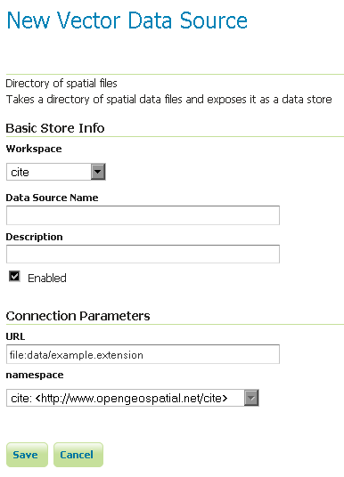

Directory of spatial files¶
The directory store automates the process of loading multiple shapefiles into GeoServer. Loading a directory that contains multiple shapefiles will automatically add each shapefile to GeoServer.
Note
While GeoServer has robust support for the shapefile format, it is not the recommended format of choice in a production environment. Databases such as PostGIS are more suitable in production and offer better performance and scalability. See the section on Running in a Production Environment for more information.
Adding a directory¶
To begin, navigate to Stores ‣ Add a new store ‣ Directory of spatial files.

Adding a directory of spatial files as a store
| Option | Description |
| Workspace | Name of the workspace to contain the store. This will also be the prefix of all of the layer names created from shapefiles in the store. |
| Data Source Name | Name of the store as known to GeoServer. |
| Description | Description of the directory store. |
| Enabled | Enables the store. If disabled, no data in any of the shapefiles will be served. |
| URL | Location of the directory. Can be an absolute path (such as file:C:\Data\shapefile_directory) or a path relative to the data directory (such as file:data/shapefile_directory. |
| namespace | Namespace to be associated with the store. This field is altered by changing the workspace name. |
When finished, click Save.
Previous: Shapefile
Next: Java Properties